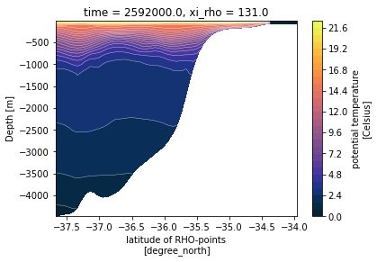

Quickly plot a meridional section of CROCO outputs¶
This notebook shows how xoa takes advantage of CF conventions.
Read of the CROCO model outputs.
Computation of the depths from s-coordinates with the xoa.sigma module.
Find the name of coordinates with the xoa.cf module,
Make a simple plot.
Inits¶
Import needed modules and register xarray accessors.
[1]:
import xarray as xr
import cmocean
import xoa
xoa.register_accessors()
Read the model¶
This sample is a meridional extraction of a full 3D CROCO output.
[2]:
ds = xoa.open_data_sample("croco.south-africa.meridional.nc")
ds
[2]:
xarray.Dataset
- auxil: 4
- eta_rho: 56
- eta_v: 55
- s_rho: 32
- s_w: 33
- time: 1
- xi_rho: 1
- xi_u: 1
- eta_rho(eta_rho)float326.0 7.0 8.0 9.0 ... 59.0 60.0 61.0
- long_name :
- y-dimension of the grid
- standard_name :
- y_grid_index
- axis :
- Y
- c_grid_dynamic_range :
- 2:171
array([ 6., 7., 8., 9., 10., 11., 12., 13., 14., 15., 16., 17., 18., 19., 20., 21., 22., 23., 24., 25., 26., 27., 28., 29., 30., 31., 32., 33., 34., 35., 36., 37., 38., 39., 40., 41., 42., 43., 44., 45., 46., 47., 48., 49., 50., 51., 52., 53., 54., 55., 56., 57., 58., 59., 60., 61.], dtype=float32) - eta_v(eta_v)float326.5 7.5 8.5 9.5 ... 58.5 59.5 60.5
- long_name :
- y-dimension of the grid at v location
- standard_name :
- x_grid_index_at_v_location
- axis :
- Y
- c_grid_axis_shift :
- 0.5
- c_grid_dynamic_range :
- 2:170
array([ 6.5, 7.5, 8.5, 9.5, 10.5, 11.5, 12.5, 13.5, 14.5, 15.5, 16.5, 17.5, 18.5, 19.5, 20.5, 21.5, 22.5, 23.5, 24.5, 25.5, 26.5, 27.5, 28.5, 29.5, 30.5, 31.5, 32.5, 33.5, 34.5, 35.5, 36.5, 37.5, 38.5, 39.5, 40.5, 41.5, 42.5, 43.5, 44.5, 45.5, 46.5, 47.5, 48.5, 49.5, 50.5, 51.5, 52.5, 53.5, 54.5, 55.5, 56.5, 57.5, 58.5, 59.5, 60.5], dtype=float32) - lat_rho(eta_rho, xi_rho)float32...
- long_name :
- latitude of RHO-points
- units :
- degree_north
- field :
- lat_rho, scalar
- standard_name :
- latitude
array([[-37.671074], [-37.605114], [-37.539093], [-37.473015], [-37.40688 ], [-37.340683], [-37.27443 ], [-37.20812 ], [-37.14175 ], [-37.07532 ], [-37.00883 ], [-36.942287], [-36.875683], [-36.80902 ], [-36.742302], [-36.675526], [-36.60869 ], [-36.541794], [-36.474842], [-36.407833], [-36.340767], [-36.27364 ], [-36.206455], [-36.139217], [-36.07192 ], [-36.00456 ], [-35.937145], [-35.869675], [-35.802143], [-35.73456 ], [-35.666912], [-35.599213], [-35.531452], [-35.46364 ], [-35.395763], [-35.32783 ], [-35.259846], [-35.1918 ], [-35.123695], [-35.05554 ], [-34.98732 ], [-34.91905 ], [-34.850716], [-34.78233 ], [-34.713886], [-34.645386], [-34.576828], [-34.508217], [-34.439545], [-34.37082 ], [-34.302036], [-34.233196], [-34.1643 ], [-34.095345], [-34.026337], [-33.95727 ]], dtype=float32) - lat_u(eta_rho, xi_u)float32...
- long_name :
- latitude of U-points
- units :
- degree_north
- field :
- lat_u, scalar
- standard_name :
- latitude_at_u_location
array([[-37.671074], [-37.605114], [-37.539093], [-37.473015], [-37.40688 ], [-37.340683], [-37.27443 ], [-37.20812 ], [-37.14175 ], [-37.07532 ], [-37.00883 ], [-36.942287], [-36.875683], [-36.80902 ], [-36.742302], [-36.675526], [-36.60869 ], [-36.541794], [-36.474842], [-36.407833], [-36.340767], [-36.27364 ], [-36.206455], [-36.139217], [-36.07192 ], [-36.00456 ], [-35.937145], [-35.869675], [-35.802143], [-35.73456 ], [-35.666912], [-35.599213], [-35.531452], [-35.46364 ], [-35.395763], [-35.32783 ], [-35.259846], [-35.1918 ], [-35.123695], [-35.05554 ], [-34.98732 ], [-34.91905 ], [-34.850716], [-34.78233 ], [-34.713886], [-34.645386], [-34.576828], [-34.508217], [-34.439545], [-34.37082 ], [-34.302036], [-34.233196], [-34.1643 ], [-34.095345], [-34.026337], [-33.95727 ]], dtype=float32) - lat_v(eta_v, xi_rho)float32...
- long_name :
- latitude of V-points
- units :
- degree_north
- field :
- lat_v, scalar
- standard_name :
- latitude_at_v_location
array([[-37.638096], [-37.572105], [-37.506054], [-37.43995 ], [-37.373783], [-37.307556], [-37.241276], [-37.174934], [-37.108536], [-37.042076], [-36.97556 ], [-36.908985], [-36.842354], [-36.77566 ], [-36.708916], [-36.642105], [-36.57524 ], [-36.50832 ], [-36.441338], [-36.3743 ], [-36.3072 ], [-36.240047], [-36.172836], [-36.105568], [-36.03824 ], [-35.97085 ], [-35.90341 ], [-35.83591 ], [-35.768353], [-35.700737], [-35.633064], [-35.565334], [-35.497543], [-35.4297 ], [-35.361797], [-35.29384 ], [-35.225822], [-35.15775 ], [-35.08962 ], [-35.021427], [-34.953186], [-34.884884], [-34.816525], [-34.748108], [-34.679638], [-34.611107], [-34.542522], [-34.47388 ], [-34.40518 ], [-34.336426], [-34.267616], [-34.198746], [-34.12982 ], [-34.06084 ], [-33.991806]], dtype=float32) - lon_rho(eta_rho, xi_rho)float32...
- long_name :
- longitude of RHO-points
- units :
- degree_east
- field :
- lon_rho, scalar
- standard_name :
- longitude
array([[18.833334], [18.833334], [18.833334], [18.833334], [18.833334], [18.833334], [18.833334], [18.833334], [18.833334], [18.833334], [18.833334], [18.833334], [18.833334], [18.833334], [18.833334], [18.833334], [18.833334], [18.833334], [18.833334], [18.833334], [18.833334], [18.833334], [18.833334], [18.833334], [18.833334], [18.833334], [18.833334], [18.833334], [18.833334], [18.833334], [18.833334], [18.833334], [18.833334], [18.833334], [18.833334], [18.833334], [18.833334], [18.833334], [18.833334], [18.833334], [18.833334], [18.833334], [18.833334], [18.833334], [18.833334], [18.833334], [18.833334], [18.833334], [18.833334], [18.833334], [18.833334], [18.833334], [18.833334], [18.833334], [18.833334], [18.833334]], dtype=float32) - lon_u(eta_rho, xi_u)float32...
- long_name :
- longitude of U-points
- units :
- degree_east
- field :
- lon_u, scalar
- standard_name :
- longitude_at_u_location
array([[18.875], [18.875], [18.875], [18.875], [18.875], [18.875], [18.875], [18.875], [18.875], [18.875], [18.875], [18.875], [18.875], [18.875], [18.875], [18.875], [18.875], [18.875], [18.875], [18.875], [18.875], [18.875], [18.875], [18.875], [18.875], [18.875], [18.875], [18.875], [18.875], [18.875], [18.875], [18.875], [18.875], [18.875], [18.875], [18.875], [18.875], [18.875], [18.875], [18.875], [18.875], [18.875], [18.875], [18.875], [18.875], [18.875], [18.875], [18.875], [18.875], [18.875], [18.875], [18.875], [18.875], [18.875], [18.875], [18.875]], dtype=float32) - lon_v(eta_v, xi_rho)float32...
- long_name :
- longitude of V-points
- units :
- degree_east
- field :
- lon_v, scalar
- standard_name :
- longitude_at_v_location
array([[18.833334], [18.833334], [18.833334], [18.833334], [18.833334], [18.833334], [18.833334], [18.833334], [18.833334], [18.833334], [18.833334], [18.833334], [18.833334], [18.833334], [18.833334], [18.833334], [18.833334], [18.833334], [18.833334], [18.833334], [18.833334], [18.833334], [18.833334], [18.833334], [18.833334], [18.833334], [18.833334], [18.833334], [18.833334], [18.833334], [18.833334], [18.833334], [18.833334], [18.833334], [18.833334], [18.833334], [18.833334], [18.833334], [18.833334], [18.833334], [18.833334], [18.833334], [18.833334], [18.833334], [18.833334], [18.833334], [18.833334], [18.833334], [18.833334], [18.833334], [18.833334], [18.833334], [18.833334], [18.833334], [18.833334]], dtype=float32) - s_rho(s_rho)float32-0.984375 -0.953125 ... -0.015625
- long_name :
- S-coordinate at RHO-points
- axis :
- Z
- positive :
- up
- standard_name :
- ocean_s_coordinate_g2
- formula_terms :
- s: sc_r C: Cs_r eta: zeta depth: h depth_c: hc
array([-0.984375, -0.953125, -0.921875, -0.890625, -0.859375, -0.828125, -0.796875, -0.765625, -0.734375, -0.703125, -0.671875, -0.640625, -0.609375, -0.578125, -0.546875, -0.515625, -0.484375, -0.453125, -0.421875, -0.390625, -0.359375, -0.328125, -0.296875, -0.265625, -0.234375, -0.203125, -0.171875, -0.140625, -0.109375, -0.078125, -0.046875, -0.015625], dtype=float32) - s_w(s_w)float32-1.0 -0.96875 ... -0.03125 0.0
- long_name :
- S-coordinate at W-points
- axis :
- Z
- positive :
- up
- c_grid_axis_shift :
- -0.5
- standard_name :
- ocean_s_coordinate_g2_at_w_location
- formula_terms :
- s: sc_w C: Cs_w eta: zeta depth: h depth_c: hc
array([-1. , -0.96875, -0.9375 , -0.90625, -0.875 , -0.84375, -0.8125 , -0.78125, -0.75 , -0.71875, -0.6875 , -0.65625, -0.625 , -0.59375, -0.5625 , -0.53125, -0.5 , -0.46875, -0.4375 , -0.40625, -0.375 , -0.34375, -0.3125 , -0.28125, -0.25 , -0.21875, -0.1875 , -0.15625, -0.125 , -0.09375, -0.0625 , -0.03125, 0. ], dtype=float32) - time(time)float642.592e+06
- long_name :
- time since initialization
- units :
- second
- field :
- time, scalar, series
- standard_name :
- time
- axis :
- T
array([2592000.])
- xi_rho(xi_rho)float32131.0
- long_name :
- x-dimension of the grid
- standard_name :
- x_grid_index
- axis :
- X
- c_grid_dynamic_range :
- 2:168
array([131.], dtype=float32)
- xi_u(xi_u)float32131.5
- long_name :
- x-dimension of the grid at u location
- standard_name :
- x_grid_index_at_u_location
- axis :
- X
- c_grid_axis_shift :
- 0.5
- c_grid_dynamic_range :
- 2:167
array([131.5], dtype=float32)
- AKt(time, s_w, eta_rho, xi_rho)float32...
- long_name :
- temperature vertical diffusion coefficient
- units :
- meter2 second-1
- field :
- AKt, scalar, series
- standard_name :
- ocean_vertical_heat_diffusivity_at_w_location
array([[[[0. ], ..., [0. ]], ..., [[0.011625], ..., [0.00501 ]]]], dtype=float32) - Cs_r(s_rho)float32...
- long_name :
- S-coordinate stretching curves at RHO-points
array([-9.638901e-01, -8.823763e-01, -7.925027e-01, -6.993572e-01, -6.075123e-01, -5.205092e-01, -4.407094e-01, -3.693915e-01, -3.069706e-01, -2.532462e-01, -2.076268e-01, -1.693081e-01, -1.374016e-01, -1.110207e-01, -8.933200e-02, -7.158282e-02, -5.711200e-02, -4.535057e-02, -3.581632e-02, -2.810541e-02, -2.188276e-02, -1.687245e-02, -1.284874e-02, -9.628024e-03, -7.061883e-03, -5.031112e-03, -3.440783e-03, -2.216196e-03, -1.299611e-03, -6.476864e-04, -2.295313e-04, -2.530332e-05], dtype=float32) - Cs_w(s_w)float32...
- long_name :
- S-coordinate stretching curves at W-points
array([-1.000000e+00, -9.244937e-01, -8.381633e-01, -7.460330e-01, -6.530234e-01, -5.632306e-01, -4.796059e-01, -4.039469e-01, -3.370698e-01, -2.790515e-01, -2.294704e-01, -1.876096e-01, -1.526095e-01, -1.235742e-01, -9.963893e-02, -8.000848e-02, -6.397530e-02, -5.092469e-02, -4.033201e-02, -3.175539e-02, -2.482658e-02, -1.924125e-02, -1.474965e-02, -1.114803e-02, -8.271204e-03, -5.986027e-03, -4.185993e-03, -2.786745e-03, -1.722424e-03, -9.427696e-04, -4.108738e-04, -1.015130e-04, 0.000000e+00], dtype=float32) - Vtransform()float32...
- long_name :
- vertical terrain-following transformation equatio
array(2., dtype=float32)
- angle(eta_rho, xi_rho)float32...
- long_name :
- angle between XI-axis and EAST
- units :
- radians
- field :
- angle, scalar
array([[-0.000444], [-0.000444], [-0.000443], [-0.000442], [-0.000442], [-0.000441], [-0.00044 ], [-0.00044 ], [-0.000439], [-0.000438], [-0.000438], [-0.000437], [-0.000436], [-0.000436], [-0.000435], [-0.000434], [-0.000434], [-0.000433], [-0.000432], [-0.000432], [-0.000431], [-0.00043 ], [-0.00043 ], [-0.000429], [-0.000428], [-0.000427], [-0.000427], [-0.000426], [-0.000425], [-0.000425], [-0.000424], [-0.000423], [-0.000423], [-0.000422], [-0.000421], [-0.000421], [-0.00042 ], [-0.000419], [-0.000418], [-0.000418], [-0.000417], [-0.000416], [-0.000416], [-0.000415], [-0.000414], [-0.000413], [-0.000413], [-0.000412], [-0.000411], [-0.000411], [-0.00041 ], [-0.000409], [-0.000408], [-0.000408], [-0.000407], [-0.000406]], dtype=float32) - el()float32...
- long_name :
- domain length in the ETA-direction
- units :
- meter
array(9.96921e+36, dtype=float32)
- f(eta_rho, xi_rho)float32...
- long_name :
- Coriolis parameter at RHO-points
- units :
- second-1
- field :
- coriolis, scalar
- standard_name :
- coriolis_parameter
array([[-8.888490e-05], [-8.875230e-05], [-8.861948e-05], [-8.848641e-05], [-8.835311e-05], [-8.821957e-05], [-8.808580e-05], [-8.795179e-05], [-8.781755e-05], [-8.768307e-05], [-8.754835e-05], [-8.741340e-05], [-8.727821e-05], [-8.714279e-05], [-8.700713e-05], [-8.687123e-05], [-8.673510e-05], [-8.659873e-05], [-8.646213e-05], [-8.632529e-05], [-8.618821e-05], [-8.605089e-05], [-8.591334e-05], [-8.577555e-05], [-8.563753e-05], [-8.549926e-05], [-8.536076e-05], [-8.522203e-05], [-8.508306e-05], [-8.494385e-05], [-8.480441e-05], [-8.466473e-05], [-8.452481e-05], [-8.438466e-05], [-8.424426e-05], [-8.410364e-05], [-8.396277e-05], [-8.382167e-05], [-8.368033e-05], [-8.353875e-05], [-8.339695e-05], [-8.325490e-05], [-8.311261e-05], [-8.297009e-05], [-8.282733e-05], [-8.268433e-05], [-8.254110e-05], [-8.239764e-05], [-8.225393e-05], [-8.210999e-05], [-8.196581e-05], [-8.182140e-05], [-8.167674e-05], [-8.153186e-05], [-8.138673e-05], [-8.124137e-05]], dtype=float32) - h(eta_rho, xi_rho)float32...
- long_name :
- bathymetry at RHO-points
- units :
- meter
- field :
- bath, scalar
- standard_name :
- model_sea_floor_depth_below_geoid
array([[4642.4805 ], [4616.181 ], [4595.3374 ], [4581.255 ], [4542.7124 ], [4430.3193 ], [4249.5913 ], [4090.5994 ], [4037.55 ], [4081.558 ], [4152.395 ], [4189.0977 ], [4174.8154 ], [4130.6025 ], [4073.8738 ], [3993.4517 ], [3876.294 ], [3735.529 ], [3599.2703 ], [3488.9453 ], [3404.595 ], [3324.4343 ], [3235.4849 ], [3148.622 ], [3067.725 ], [2971.6807 ], [2842.4705 ], [2679.4983 ], [2467.9531 ], [2168.6362 ], [1776.1969 ], [1359.3326 ], [1002.3789 ], [ 736.01794 ], [ 544.335 ], [ 416.5676 ], [ 326.9887 ], [ 264.6551 ], [ 225.11069 ], [ 202.59581 ], [ 190.43742 ], [ 183.45415 ], [ 177.83023 ], [ 170.88057 ], [ 161.59294 ], [ 149.36905 ], [ 131.47714 ], [ 106.77946 ], [ 85.11438 ], [ 78.912025], [ 79.77068 ], [ 80.41617 ], [ 77.94205 ], [ 75.497696], [ 75.00553 ], [ 75.00002 ]], dtype=float32) - hbl(time, eta_rho, xi_rho)float32...
- long_name :
- depth of planetary boundary layer
- units :
- meter
- field :
- hbl, scalar, series
- standard_name :
- ocean_mixed_layer_thickness_defined_by_mixing_scheme
array([[[32.73638 ], [34.198696], [35.207134], [35.35553 ], [34.430862], [33.179817], [32.579483], [33.477936], [36.00736 ], [38.150616], [38.131054], [37.442867], [37.847797], [38.781193], [39.152958], [38.574875], [37.154194], [35.443714], [34.221268], [33.822117], [33.947254], [33.941795], [33.449566], [32.835735], [32.21321 ], [31.188955], [29.97783 ], [29.09969 ], [28.658548], [28.3915 ], [28.011566], [27.616394], [27.404417], [27.409506], [27.877325], [28.921944], [29.96726 ], [30.636528], [30.95451 ], [31.13909 ], [31.321808], [31.123857], [30.596966], [29.753872], [27.673788], [23.78221 ], [18.94705 ], [14.114677], [10.695769], [ 0. ], [ 0. ], [ 0. ], [ 0. ], [ 0. ], [ 0. ], [ 0. ]]], dtype=float32) - hc()float32...
- long_name :
- S-coordinate parameter, critical depth
- units :
- meter
array(200., dtype=float32)
- mask_rho(eta_rho, xi_rho)float32...
- long_name :
- mask on RHO-points
- option_0 :
- land
- option_1 :
- water
- standard_name :
- land_binary_mask
array([[1.], [1.], [1.], [1.], [1.], [1.], [1.], [1.], [1.], [1.], [1.], [1.], [1.], [1.], [1.], [1.], [1.], [1.], [1.], [1.], [1.], [1.], [1.], [1.], [1.], [1.], [1.], [1.], [1.], [1.], [1.], [1.], [1.], [1.], [1.], [1.], [1.], [1.], [1.], [1.], [1.], [1.], [1.], [1.], [1.], [1.], [1.], [1.], [1.], [0.], [0.], [0.], [0.], [0.], [0.], [0.]], dtype=float32) - pm(eta_rho, xi_rho)float32...
- long_name :
- curvilinear coordinates metric in X
- units :
- meter-1
- field :
- pm, scalar
- standard_name :
- inverse_of_cell_x_size
array([[0.000136], [0.000136], [0.000136], [0.000136], [0.000136], [0.000136], [0.000136], [0.000136], [0.000135], [0.000135], [0.000135], [0.000135], [0.000135], [0.000135], [0.000135], [0.000135], [0.000135], [0.000134], [0.000134], [0.000134], [0.000134], [0.000134], [0.000134], [0.000134], [0.000134], [0.000133], [0.000133], [0.000133], [0.000133], [0.000133], [0.000133], [0.000133], [0.000133], [0.000133], [0.000132], [0.000132], [0.000132], [0.000132], [0.000132], [0.000132], [0.000132], [0.000132], [0.000132], [0.000131], [0.000131], [0.000131], [0.000131], [0.000131], [0.000131], [0.000131], [0.000131], [0.000131], [0.00013 ], [0.00013 ], [0.00013 ], [0.00013 ]], dtype=float32) - pn(eta_rho, xi_rho)float32...
- long_name :
- curvilinear coordinates metric in ET
- units :
- meter-1
- field :
- pn, scalar
- standard_name :
- inverse_of_cell_y_size
array([[0.000136], [0.000136], [0.000136], [0.000136], [0.000136], [0.000136], [0.000136], [0.000136], [0.000136], [0.000135], [0.000135], [0.000135], [0.000135], [0.000135], [0.000135], [0.000135], [0.000135], [0.000134], [0.000134], [0.000134], [0.000134], [0.000134], [0.000134], [0.000134], [0.000134], [0.000134], [0.000133], [0.000133], [0.000133], [0.000133], [0.000133], [0.000133], [0.000133], [0.000133], [0.000133], [0.000132], [0.000132], [0.000132], [0.000132], [0.000132], [0.000132], [0.000132], [0.000132], [0.000132], [0.000131], [0.000131], [0.000131], [0.000131], [0.000131], [0.000131], [0.000131], [0.000131], [0.000131], [0.00013 ], [0.00013 ], [0.00013 ]], dtype=float32) - salt(time, s_rho, eta_rho, xi_rho)float32...
- long_name :
- salinity
- units :
- PSU
- field :
- salinity, scalar, series
- standard_name :
- sea_water_salinity
array([[[[34.722584], ..., [ 0. ]], ..., [[35.546303], ..., [ 0. ]]]], dtype=float32) - sc_r(s_rho)float32...
- long_name :
- ocean s roms coordinate at rho point
- Vtransform :
- 2
array([-0.984375, -0.953125, -0.921875, -0.890625, -0.859375, -0.828125, -0.796875, -0.765625, -0.734375, -0.703125, -0.671875, -0.640625, -0.609375, -0.578125, -0.546875, -0.515625, -0.484375, -0.453125, -0.421875, -0.390625, -0.359375, -0.328125, -0.296875, -0.265625, -0.234375, -0.203125, -0.171875, -0.140625, -0.109375, -0.078125, -0.046875, -0.015625], dtype=float32) - sc_w(s_w)float32...
- long_name :
- ocean s roms coordinate at w point
- Vtransform :
- 2
array([-1. , -0.96875, -0.9375 , -0.90625, -0.875 , -0.84375, -0.8125 , -0.78125, -0.75 , -0.71875, -0.6875 , -0.65625, -0.625 , -0.59375, -0.5625 , -0.53125, -0.5 , -0.46875, -0.4375 , -0.40625, -0.375 , -0.34375, -0.3125 , -0.28125, -0.25 , -0.21875, -0.1875 , -0.15625, -0.125 , -0.09375, -0.0625 , -0.03125, 0. ], dtype=float32) - temp(time, s_rho, eta_rho, xi_rho)float32...
- long_name :
- potential temperature
- units :
- Celsius
- field :
- temperature, scalar, series
- standard_name :
- sea_water_potential_temperature
array([[[[ 0.622861], ..., [ 0. ]], ..., [[19.955126], ..., [ 0. ]]]], dtype=float32) - time_step(time, auxil)int32...
- long_name :
- time step and record numbers from initialization
array([[2161, 1, 31, 30]], dtype=int32)
- u(time, s_rho, eta_rho, xi_u)float32...
- long_name :
- u-momentum component
- units :
- meter second-1
- field :
- u-velocity, scalar, series
- standard_name :
- sea_water_x_velocity_at_u_location
array([[[[-0.031335], ..., [ 0. ]], ..., [[ 0.329507], ..., [ 0. ]]]], dtype=float32) - v(time, s_rho, eta_v, xi_rho)float32...
- long_name :
- v-momentum component
- units :
- meter second-1
- field :
- v-velocity, scalar, series
- standard_name :
- sea_water_y_velocity_at_v_location
array([[[[-0.020772], ..., [ 0. ]], ..., [[ 0.101262], ..., [ 0. ]]]], dtype=float32) - w(time, s_rho, eta_rho, xi_rho)float32...
- long_name :
- vertical momentum component
- units :
- meter second-1
- field :
- w-velocity, scalar, series
- standard_name :
- upward_sea_water_velocity
array([[[[-4.693892e-05], ..., [ 0.000000e+00]], ..., [[-5.326599e-08], ..., [ 0.000000e+00]]]], dtype=float32) - xl()float32...
- long_name :
- domain length in the XI-direction
- units :
- meter
array(9.96921e+36, dtype=float32)
- zeta(time, eta_rho, xi_rho)float32...
- long_name :
- free-surface
- units :
- meter
- field :
- free-surface, scalar, series
- standard_name :
- sea_surface_height
array([[[-0.070257], [-0.046915], [-0.023059], [-0.001335], [ 0.014633], [ 0.021417], [ 0.015941], [-0.003588], [-0.036233], [-0.079247], [-0.12812 ], [-0.177257], [-0.221278], [-0.256548], [-0.280562], [-0.291271], [-0.288574], [-0.274554], [-0.252263], [-0.225017], [-0.195626], [-0.16573 ], [-0.136378], [-0.108748], [-0.084697], [-0.06497 ], [-0.051286], [-0.044922], [-0.045856], [-0.053887], [-0.068335], [-0.087932], [-0.110496], [-0.133562], [-0.155021], [-0.173405], [-0.188201], [-0.199767], [-0.208936], [-0.216582], [-0.222734], [-0.227701], [-0.231783], [-0.234428], [-0.241091], [-0.258022], [-0.280915], [-0.303199], [-0.323413], [ 0. ], [ 0. ], [ 0. ], [ 0. ], [ 0. ], [ 0. ], [ 0. ]]], dtype=float32)
- type :
- ROMS history file
- title :
- BENGUELA TEST MODEL
- date :
- rst_file :
- CROCO_FILES/croco_rst.nc
- his_file :
- CROCO_FILES/croco_his.nc
- avg_file :
- CROCO_FILES/croco_avg.nc
- grd_file :
- CROCO_FILES/croco_grd.nc
- ini_file :
- CROCO_FILES/croco_ini.nc
- frc_file :
- qbar_file :
- CROCO_FILES/croco_runoff.nc
- VertCoordType :
- NEW
- skpp :
- 2005
- theta_s :
- 7.0
- theta_s_expl :
- S-coordinate surface control parameter
- theta_b :
- 2.0
- theta_b_expl :
- S-coordinate bottom control parameter
- Tcline :
- 200.0
- Tcline_expl :
- S-coordinate surface/bottom layer width
- Tcline_units :
- meter
- hc :
- 200.0
- hc_expl :
- S-coordinate parameter, critical depth
- hc_units :
- meter
- sc_w :
- [-1. -0.96875 -0.9375 -0.90625 -0.875 -0.84375 -0.8125 -0.78125 -0.75 -0.71875 -0.6875 -0.65625 -0.625 -0.59375 -0.5625 -0.53125 -0.5 -0.46875 -0.4375 -0.40625 -0.375 -0.34375 -0.3125 -0.28125 -0.25 -0.21875 -0.1875 -0.15625 -0.125 -0.09375 -0.0625 -0.03125 0. ]
- sc_w_expl :
- S-coordinate at W-points
- Cs_w :
- [-1.00000000e+00 -9.24493670e-01 -8.38163316e-01 -7.46033013e-01 -6.53023422e-01 -5.63230574e-01 -4.79605854e-01 -4.03946906e-01 -3.37069809e-01 -2.79051453e-01 -2.29470432e-01 -1.87609613e-01 -1.52609482e-01 -1.23574175e-01 -9.96389315e-02 -8.00084844e-02 -6.39752969e-02 -5.09246923e-02 -4.03320119e-02 -3.17553878e-02 -2.48265807e-02 -1.92412529e-02 -1.47496453e-02 -1.11480309e-02 -8.27120431e-03 -5.98602695e-03 -4.18599322e-03 -2.78674485e-03 -1.72242383e-03 -9.42769577e-04 -4.10873821e-04 -1.01512953e-04 0.00000000e+00]
- Cs_w_expl :
- S-coordinate stretching curves at W-points
- sc_r :
- [-0.984375 -0.953125 -0.921875 -0.890625 -0.859375 -0.828125 -0.796875 -0.765625 -0.734375 -0.703125 -0.671875 -0.640625 -0.609375 -0.578125 -0.546875 -0.515625 -0.484375 -0.453125 -0.421875 -0.390625 -0.359375 -0.328125 -0.296875 -0.265625 -0.234375 -0.203125 -0.171875 -0.140625 -0.109375 -0.078125 -0.046875 -0.015625]
- sc_r_expl :
- S-coordinate at W-points
- Cs_r :
- [-9.6389008e-01 -8.8237631e-01 -7.9250270e-01 -6.9935721e-01 -6.0751230e-01 -5.2050924e-01 -4.4070938e-01 -3.6939147e-01 -3.0697057e-01 -2.5324622e-01 -2.0762683e-01 -1.6930805e-01 -1.3740157e-01 -1.1102068e-01 -8.9331999e-02 -7.1582817e-02 -5.7112001e-02 -4.5350567e-02 -3.5816319e-02 -2.8105414e-02 -2.1882765e-02 -1.6872453e-02 -1.2848737e-02 -9.6280240e-03 -7.0618833e-03 -5.0311117e-03 -3.4407831e-03 -2.2161959e-03 -1.2996108e-03 -6.4768636e-04 -2.2953130e-04 -2.5303325e-05]
- Cs_r_expl :
- S-coordinate stretching curves at RHO-points
- ntimes :
- 8640
- ndtfast :
- 60
- dt :
- 1200.0
- dtfast :
- 20.0
- nwrt :
- 72
- ntsavg :
- 1
- ntsavg_expl :
- starting time-step for accumulation of time-averaged fields
- navg :
- 72
- navg_expl :
- number of time-steps between time-averaged records
- tnu4 :
- 0.0
- tnu4_expl :
- biharmonic mixing coefficient for tracers
- units :
- meter4 second-1
- rdrg :
- 0.0003
- rdrg_expl :
- linear drag coefficient
- rdrg_units :
- meter second-1
- rho0 :
- 1025.0
- rho0_expl :
- Mean density used in Boussinesq approximation
- rho0_units :
- kilogram meter-3
- gamma2 :
- 1.0
- gamma2_expl :
- Slipperiness parameter
- x_sponge :
- 0.0
- v_sponge :
- 0.0
- sponge_expl :
- Sponge parameters : extent (m) & viscosity (m2.s-1)
- SRCS :
- main.F step.F read_inp.F timers_roms.F init_scalars.F init_arrays.F set_weights.F set_scoord.F ana_grid.F setup_grid1.F setup_grid2.F set_nudgcof.F ana_initial.F analytical.F zonavg.F step2d.F u2dbc.F v2dbc.F zetabc.F obc_volcons.F pre_step3d.F step3d_t.F step3d_uv1.F step3d_uv2.F prsgrd.F rhs3d.F set_depth.F omega.F uv3dmix.F uv3dmix_spg.F t3dmix.F t3dmix_spg.F hmix_coef.F wetdry.F u3dbc.F v3dbc.F t3dbc.F step3d_fast.F step3d_w.F rhs3d_w_nh.F initial_nbq.F grid_nbq.F unbq_bc.F vnbq_bc.F wnbq_bc.F rnbq_bc.F w3dbc.F nbq_bry_store.F rho_eos.F ab_ratio.F alfabeta.F ana_vmix.F bvf_mix.F lmd_vmix.F gls_mixing.F lmd_skpp.F lmd_bkpp.F lmd_swfrac.F lmd_wscale.F diag.F wvlcty.F checkdims.F grid_stiffness.F bio_diag.F setup_kwds.F check_kwds.F check_srcs.F check_switches1.F check_switches2.F debug.F output.F put_global_atts.F nf_fread.F nf_fread_x.F nf_fread_y.F nf_read_bry.F get_date.F lenstr.F closecdf.F insert_node.F fillvalue.F nf_add_attribute.F set_cycle.F def_grid_2d.F def_grid_3d.F def_his.F def_rst.F def_diags.F def_diagsM.F def_bio_diags.F wrt_grid.F wrt_his.F wrt_avg.F wrt_rst.F wrt_diags.F wrt_diags_avg.F wrt_diagsM.F wrt_diagsM_avg.F wrt_bio_diags.F wrt_bio_diags_avg.F set_avg.F set_diags_avg.F set_diagsM_avg.F set_bio_diags_avg.F def_diags_vrt.F wrt_diags_vrt.F set_diags_vrt.F set_diags_vrt_avg.F wrt_diags_vrt_avg.F def_diags_ek.F wrt_diags_ek.F set_diags_ek.F set_diags_ek_avg.F wrt_diags_ek_avg.F def_diags_pv.F wrt_diags_pv.F set_diags_pv.F set_diags_pv_avg.F wrt_diags_pv_avg.F def_diags_eddy.F set_diags_eddy_avg.F wrt_diags_eddy_avg.F def_surf.F wrt_surf.F set_surf_avg.F wrt_surf_avg.F get_grid.F get_initial.F get_vbc.F get_wwave.F get_tclima.F get_uclima.F get_ssh.F get_sss.F get_smflux.F get_stflux.F get_srflux.F get_sst.F mod_tides_mas.F tidedata.F mas.F get_tides.F clm_tides.F get_bulk.F bulk_flux.F get_bry.F get_bry_bio.F sstskin.F get_psource.F get_psource_ts.F cfb_stress.F mrl_wci.F wkb_wwave.F wkbbc.F get_bry_wkb.F online_bulk_var.F online_get_bulk.F online_interp.F online_interpolate_bulk.F online_set_bulk.F init_floats.F wrt_floats.F step_floats.F rhs_floats.F interp_rho.F def_floats.F init_arrays_floats.F random_walk.F get_initial_floats.F init_sta.F wrt_sta.F step_sta.F interp_sta.F def_sta.F init_arrays_sta.F biology.F o2sato.F sediment.F bbl.F MPI_Setup.F MessPass2D.F MessPass3D.F exchange.F autotiling.F MessPass3D_nbq.F zoom.F update2D.F set_nudgcof_fine.F zoombc_2D.F zoombc_3D.F uv3dpremix.F t3dpremix.F update3D.F zoombc_3Dfast.F Agrif2Model.F send_xios_diags.F cpl_prism_define.F cpl_prism_put.F cpl_prism_init.F cpl_prism_get.F cpl_prism_getvar.F cpl_prism_grid.F 90 \ par_pisces.F90 ocean2pisces.F90 trc.F90 sms_pisces.F90 p4zche.F90 p4zint.F90 p4zlys.F90 p4zflx.F90 p4zlim.F90 p4zsink.F90 p4zmicro.F90 p4zmeso.F90 p4zmort.F90 p4zopt.F90 p4zprod.F90 p4zrem.F90 p4zsed.F90 p4zbio.F90 trcwri_pisces.F90 trcsms_pisces.F90 trcini_pisces.F90 pisces_ini.F90 module_oa_parameter.F90 module_oa_time.F90 module_oa_space.F90 module_oa_periode.F90 module_oa_variables.F90 module_oa_type.F90 module_oa_stock.F90 module_oa_level.F90 module_oa_interface.F90 module_oa_upd.F90 croco_oa.F90 var_oa.F90 tooldatosec.F90 toolsectodat.F90 tooldecompdat.F90
- CPP-options :
- REGIONAL BENGUELA_VHR MPI OBC_EAST OBC_WEST OBC_NORTH OBC_SOUTH CURVGRID SPHERICAL MASKING NEW_S_COORD SOLVE3D UV_COR UV_ADV SALINITY NONLIN_EOS UV_HADV_UP3 UV_VADV_SPLINES TS_HADV_RSUP3 TS_DIF4 TS_VADV_AKIMA SPONGE LMD_MIXING LMD_SKPP LMD_BKPP LMD_RIMIX LMD_CONVEC LMD_NONLOCAL BULK_FLUX BULK_FAIRALL BULK_LW BULK_EP BULK_SMFLUX FRC_BRY Z_FRC_BRY M2_FRC_BRY M3_FRC_BRY T_FRC_BRY ANA_BSFLUX ANA_BTFLUX PSOURCE PSOURCE_NCFILE OBC_M2CHARACT OBC_M3ORLANSKI OBC_TORLANSKI AVERAGES AVERAGES_K ANA_PSOURCE SPLIT_EOS TS_HADV_C4 M2FILTER_POWER HZR VAR_RHO_2D UV_MIX_S DIF_COEF_3D TS_MIX_ISO TS_MIX_IMP TS_MIX_ISO_FILT NTRA_T3DMIX SPONGE_GRID SPONGE_DIF2 SPONGE_VIS2 BULK_SM_UPDATE LMD_SKPP2005 LIMIT_BSTRESS NF_CLOBBER
- history :
- Tue Mar 31 16:26:24 2020: ncks -O -d time,30 -d xi_rho,130 -d xi_u,130 -d eta_rho,5,60 -d eta_v,5,59 -x -v bostr,hbbl,radsw,scrum_time,shflux,shflx_lat,shflx_rlw,shflx_sen,spherical,sustr,svstr,swflux,ubar,vbar,wstr /media/partage/Data/CROCO/South-Africa/croco_his.nc croco.south-africa.zonal.nc
- NCO :
- 4.4.2
Compute depths from s-coordinates¶
Decode the dataset according to the CF cnvensions:
Find sigma terms
Compute depths
Assigna depths as coordinates
[3]:
ds = ds.decode_sigma()
ds.depth
[3]:
xarray.DataArray
'depth'
- time: 1
- s_rho: 32
- eta_rho: 56
- xi_rho: 1
- -4478.771 -4453.4194 -4433.327 ... -0.8569021 -0.8528361 -0.8527905
array([[[[-4.4787710e+03], [-4.4534194e+03], [-4.4333271e+03], ..., [-7.3894226e+01], [-7.3414513e+01], [-7.3409134e+01]], [[-4.1099888e+03], [-4.0867766e+03], [-4.0683792e+03], ..., [-7.0494987e+01], [-7.0042336e+01], [-7.0037262e+01]], [[-3.7039980e+03], [-3.6831455e+03], [-3.6666174e+03], ..., [-6.6922798e+01], [-6.6499138e+01], [-6.6494392e+01]], ..., [[-1.7932339e+01], [-1.7888559e+01], [-1.7848497e+01], ..., [-4.2952929e+00], [-4.2748423e+00], [-4.2746129e+00]], [[-1.0079492e+01], [-1.0048058e+01], [-1.0017785e+01], ..., [-2.5738845e+00], [-2.5616508e+00], [-2.5615137e+00]], [[-3.1787627e+00], [-3.1540668e+00], [-3.1291361e+00], ..., [-8.5690212e-01], [-8.5283607e-01], [-8.5279047e-01]]]], dtype=float32) - eta_rho(eta_rho)float326.0 7.0 8.0 9.0 ... 59.0 60.0 61.0
- long_name :
- y-dimension of the grid
- standard_name :
- y_grid_index
- axis :
- Y
- c_grid_dynamic_range :
- 2:171
array([ 6., 7., 8., 9., 10., 11., 12., 13., 14., 15., 16., 17., 18., 19., 20., 21., 22., 23., 24., 25., 26., 27., 28., 29., 30., 31., 32., 33., 34., 35., 36., 37., 38., 39., 40., 41., 42., 43., 44., 45., 46., 47., 48., 49., 50., 51., 52., 53., 54., 55., 56., 57., 58., 59., 60., 61.], dtype=float32) - lat_rho(eta_rho, xi_rho)float32-37.671074 -37.605114 ... -33.95727
- long_name :
- latitude of RHO-points
- units :
- degree_north
- field :
- lat_rho, scalar
- standard_name :
- latitude
array([[-37.671074], [-37.605114], [-37.539093], [-37.473015], [-37.40688 ], [-37.340683], [-37.27443 ], [-37.20812 ], [-37.14175 ], [-37.07532 ], [-37.00883 ], [-36.942287], [-36.875683], [-36.80902 ], [-36.742302], [-36.675526], [-36.60869 ], [-36.541794], [-36.474842], [-36.407833], [-36.340767], [-36.27364 ], [-36.206455], [-36.139217], [-36.07192 ], [-36.00456 ], [-35.937145], [-35.869675], [-35.802143], [-35.73456 ], [-35.666912], [-35.599213], [-35.531452], [-35.46364 ], [-35.395763], [-35.32783 ], [-35.259846], [-35.1918 ], [-35.123695], [-35.05554 ], [-34.98732 ], [-34.91905 ], [-34.850716], [-34.78233 ], [-34.713886], [-34.645386], [-34.576828], [-34.508217], [-34.439545], [-34.37082 ], [-34.302036], [-34.233196], [-34.1643 ], [-34.095345], [-34.026337], [-33.95727 ]], dtype=float32) - lon_rho(eta_rho, xi_rho)float3218.833334 18.833334 ... 18.833334
- long_name :
- longitude of RHO-points
- units :
- degree_east
- field :
- lon_rho, scalar
- standard_name :
- longitude
array([[18.833334], [18.833334], [18.833334], [18.833334], [18.833334], [18.833334], [18.833334], [18.833334], [18.833334], [18.833334], [18.833334], [18.833334], [18.833334], [18.833334], [18.833334], [18.833334], [18.833334], [18.833334], [18.833334], [18.833334], [18.833334], [18.833334], [18.833334], [18.833334], [18.833334], [18.833334], [18.833334], [18.833334], [18.833334], [18.833334], [18.833334], [18.833334], [18.833334], [18.833334], [18.833334], [18.833334], [18.833334], [18.833334], [18.833334], [18.833334], [18.833334], [18.833334], [18.833334], [18.833334], [18.833334], [18.833334], [18.833334], [18.833334], [18.833334], [18.833334], [18.833334], [18.833334], [18.833334], [18.833334], [18.833334], [18.833334]], dtype=float32) - s_rho(s_rho)float32-0.984375 -0.953125 ... -0.015625
- long_name :
- S-coordinate at RHO-points
- axis :
- Z
- positive :
- up
- standard_name :
- ocean_s_coordinate_g2
- formula_terms :
- s: sc_r C: Cs_r eta: zeta depth: h depth_c: hc
array([-0.984375, -0.953125, -0.921875, -0.890625, -0.859375, -0.828125, -0.796875, -0.765625, -0.734375, -0.703125, -0.671875, -0.640625, -0.609375, -0.578125, -0.546875, -0.515625, -0.484375, -0.453125, -0.421875, -0.390625, -0.359375, -0.328125, -0.296875, -0.265625, -0.234375, -0.203125, -0.171875, -0.140625, -0.109375, -0.078125, -0.046875, -0.015625], dtype=float32) - time(time)float642.592e+06
- long_name :
- time since initialization
- units :
- second
- field :
- time, scalar, series
- standard_name :
- time
- axis :
- T
array([2592000.])
- xi_rho(xi_rho)float32131.0
- long_name :
- x-dimension of the grid
- standard_name :
- x_grid_index
- axis :
- X
- c_grid_dynamic_range :
- 2:168
array([131.], dtype=float32)
- depth(time, s_rho, eta_rho, xi_rho)float32-4478.771 -4453.4194 ... -0.8527905
- units :
- m
- long_name :
- Depth
- standard_name :
- ocean_layer_depth
array([[[[-4.4787710e+03], [-4.4534194e+03], [-4.4333271e+03], ..., [-7.3894226e+01], [-7.3414513e+01], [-7.3409134e+01]], [[-4.1099888e+03], [-4.0867766e+03], [-4.0683792e+03], ..., [-7.0494987e+01], [-7.0042336e+01], [-7.0037262e+01]], [[-3.7039980e+03], [-3.6831455e+03], [-3.6666174e+03], ..., [-6.6922798e+01], [-6.6499138e+01], [-6.6494392e+01]], ..., [[-1.7932339e+01], [-1.7888559e+01], [-1.7848497e+01], ..., [-4.2952929e+00], [-4.2748423e+00], [-4.2746129e+00]], [[-1.0079492e+01], [-1.0048058e+01], [-1.0017785e+01], ..., [-2.5738845e+00], [-2.5616508e+00], [-2.5615137e+00]], [[-3.1787627e+00], [-3.1540668e+00], [-3.1291361e+00], ..., [-8.5690212e-01], [-8.5283607e-01], [-8.5279047e-01]]]], dtype=float32)
- units :
- m
- long_name :
- Depth
- standard_name :
- ocean_layer_depth
Find coordinate names from CF conventions¶
The depth were assigned as coordinates at the previous stage. We use the cf data array accessor to easlily access the latitude coordinate array.
[4]:
temp = ds.temp.squeeze()
lat_name = temp.cf.lat.name
depth_name = temp.cf.depth.name
/local/home/sraynaud/Src/xoa/xoa/cf.py:1541: XoaWarning: Multiple items found while you requested a single one
xoa_warn("Multiple items found while you requested a single one")
Plot temperature¶
Make a basic contour plot.
[5]:
temp.plot.contourf(lat_name, depth_name, cmap="cmo.thermal", levels=30)
temp.plot.contour(lat_name, depth_name, colors='w', levels=30, linewidths=.3);
